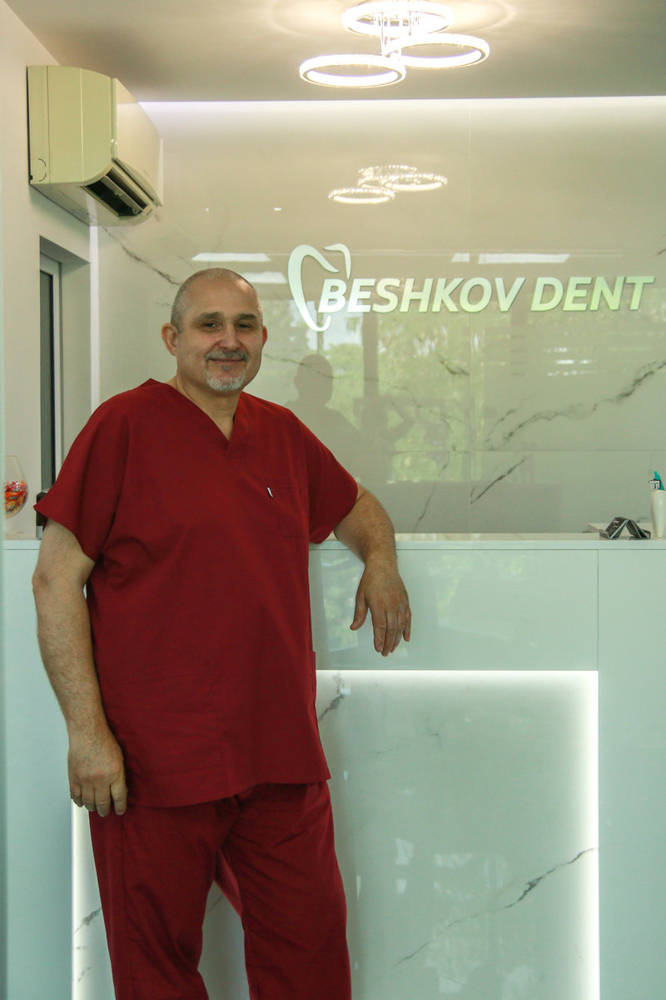
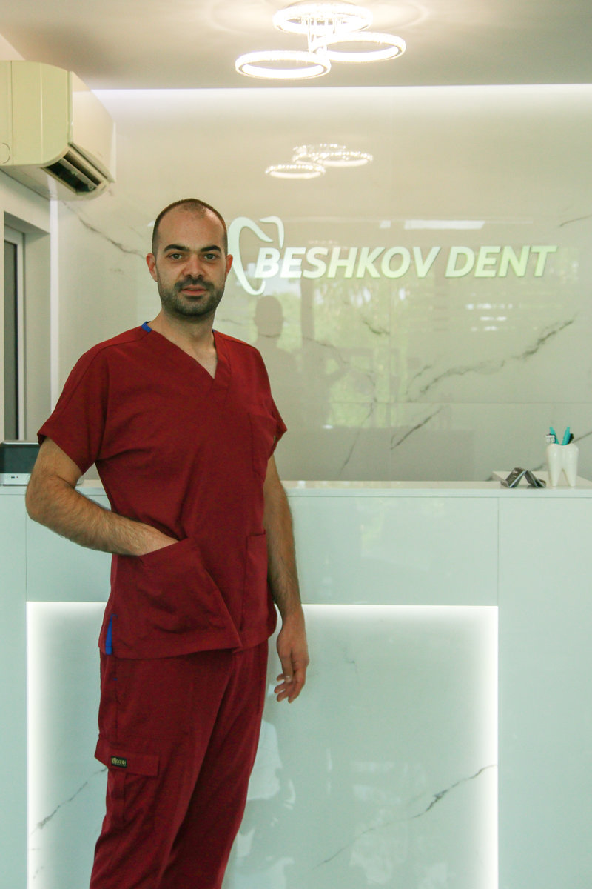
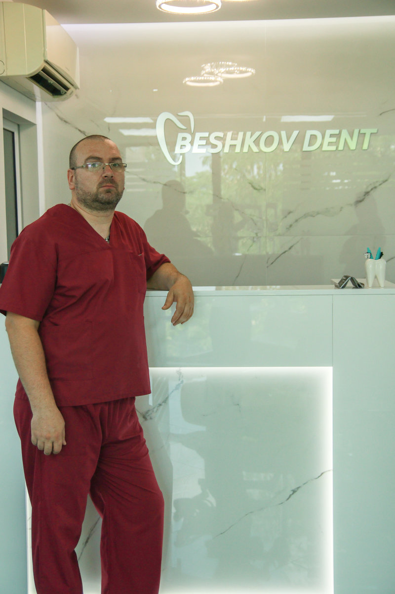
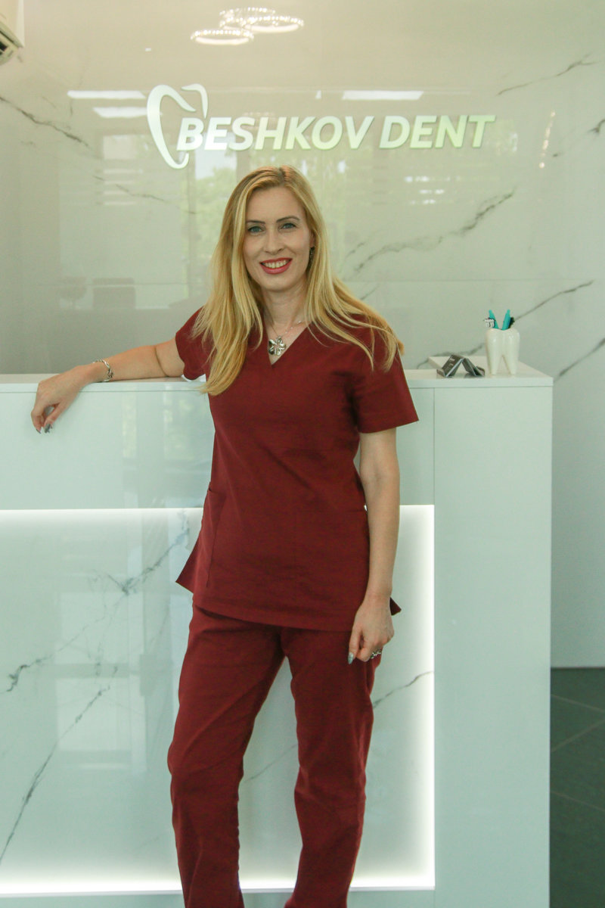
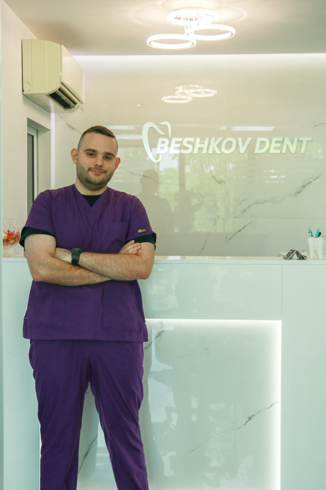
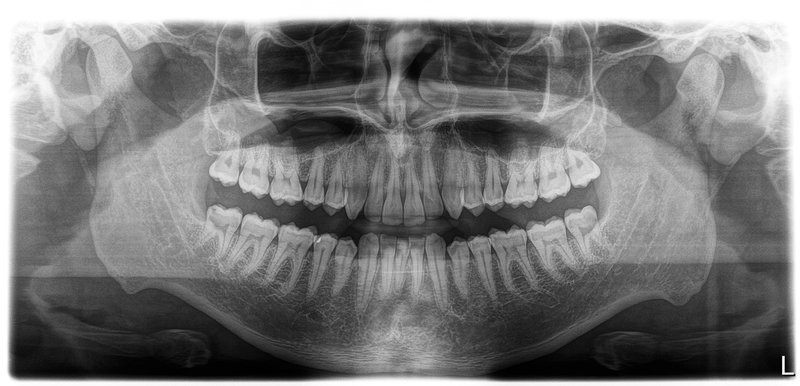
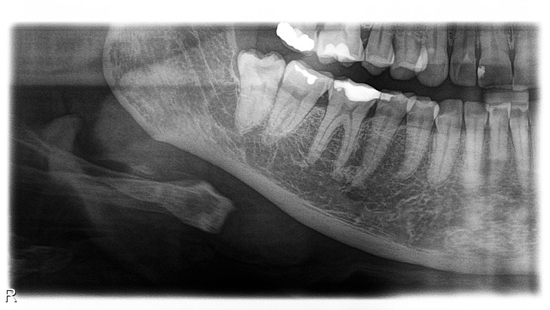
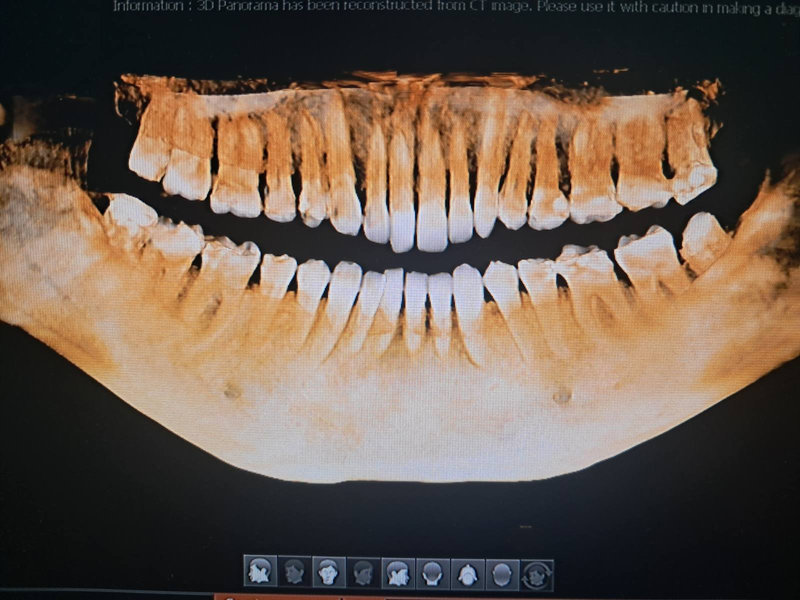

Показва общ изглед на съзъбието, челюстите, максиларните синуси и темпоромандибуларните стави. Този вид изследване е ключово при диагностика на кариеси, инфекции, кисти и травми.
Вашето запитване беше изпратено успешно.
Дентална клиника „Бешков Дент” повече от 20 години създава Вашите усмивки. Ние сме екип от млади, креативни и амбициозни специалисти, обичащи предизвикателствата. Работим с висококачествена техника и най-новите материали, предлагани на пазара. Непрекъснато се стремим да повишаваме квалификацията си, посещавайки различни курсове и обучения. Основната ни цел е да предложим професионално и качествено лечение на достъпни цени.
Подходът ни към всеки пациент е индивидуален. Стремим се да създадем приятна атмосфера и да извършваме безболезнени манипулации, по този начин опровергаваме остарелите разбирания, че зъболекарят винаги е свързан с отрицателни емоции. Нашето мото е: „Няма по-доволен пациент от усмихнатия”.
Клиниката е разположена на площ от 200 кв. м. в централната част на града. Тя разполага с няколко стоматологични и един рентгенов кабинет, оборудвани с модерна апаратура (3D дентален рентген, интраорален 3D скенер и дентален лазер) и предлага висококачествено дентално лечение на достъпни цени в уютна и комфортна обстановка с контролиран достъп.





Консервативната стоматология се занимава с кариеса и неговите усложнения
Грижа за зъбите на вашето дете
Избелването на зъби е една от най-рентабилните козметични дентални процедури
Зъбният имплант представлява изкуствено създадено тяло, което замества корена на липсващ естествен зъб
Извършваме разнообразни интервенции в областта на хирургичната дентална медицина
Денталната ортопедия има за цел да възстанови естетиката и функцията на съзъбието, самочувствието и комфорта на пациента
Ортодонтията е специалност в денталната медицина, която се занимава с диагностика, профилактика и лечение на зъбно-челюстните деформации
Пародонталните заболявания гингивит и пародонтит трябва да се лекуват своевременно
Денталният лазер се използва в различни направления на денталната медицина
Ендодонтията (кореново лечение) е дял от денталната медицина, който се занимава с лечение на заболяванията на зъбната пулпа и техните усложнения.
Клиника „Бешков Дент” разполага с модерен рентгенов апарат на марката Vatech за панорамни (ОПГ) и 3D снимки. Той използва много ниско ниво на радиация, за да заснеме и покаже изображение на зъбите Ви. Рентгеновото облъчване е с до 4 пъти по-ниско ниво спрямо облъчването при панорамните зъбни снимки на конвенционалните ортопантомографи.

Показва общ изглед на съзъбието, челюстите, максиларните синуси и темпоромандибуларните стави. Този вид изследване е ключово при диагностика на кариеси, инфекции, кисти и травми.

Секторната рентгенография е локализиран дентален рентгенов метод, който представлява рентгенова снимка (детайлен образ) на един зъб или малка група съседни зъби.

Конично-лъчевата компютърна томография (CBCT) е съвременен 3D рентгенов метод в денталната медицина, който предоставя прецизни изображения на челюсти, зъби и синуси с ниска доза облъчване.
“ Усмивката е хубава, когато е в хармония с лицето, а нашата цел е да даряваме усмивки на пациентите си. “